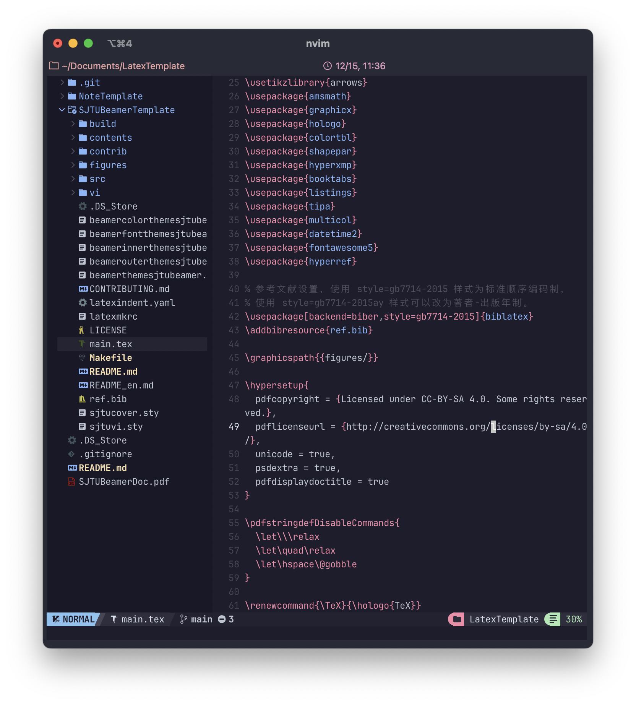

Neovim 配置（二）：LaTeX + Snippet
Last Update: Dec. 14, 2023
所有的梦想都从这篇文章开始，由于我个人字写的不够好看且排版永远是个大问题，LaTeX 的解决方法极其吸引我。然后在没有任何工具的情况下，编写带有大量数学公式的 LaTeX 文件可以说是相当痛苦的。因此在大量前人的基础上，我探索出了一套 Vim + LaTeX 的解决方案，利用 Snippet 减少了大量编写 LaTeX 文件的时间。

配置
前置要求
- 已完成 Vim, Lua, Nvchad 的安装（见本系列（一））
第一部分：VimTeX
打开 nvim/init.lua 文件，输入：
-------------------------
-- Vimtex Configuration
-------------------------
vim.cmd[[
let g:tex_flavor='latex'
let g:vimtex_quickfix_mode=0
function! s:write_server_name() abort
let nvim_server_file = (has('win32') ? $TEMP : '/tmp') . '/vimtexserver.txt'
call writefile([v:servername], nvim_server_file)
endfunction
augroup vimtex_common
autocmd!
autocmd FileType tex call s:write_server_name()
autocmd FileType tex nmap <buffer> <F9> <plug>(vimtex-compile)
augroup END
let g:vimtex_compiler_latexmk = {
\ 'build_dir' : 'build',
\ }
" TOC settings
let g:vimtex_toc_config = {
\ 'name' : 'TOC',
\ 'layers' : ['content', 'todo', 'include'],
\ 'resize' : 1,
\ 'split_width' : 30,
\ 'todo_sorted' : 0,
\ 'show_help' : 1,
\ 'show_numbers' : 1,
\ 'mode' : 2,
\ }
let g:vimtex_view_method = "skim"
let g:vimtex_view_general_viewer = '/Applications/Skim.app/Contents/SharedSupport/displayline'
let g:vimtex_view_general_options = '-r @line @pdf @tex'
let g:vimtex_view_skim_sync = 1
let g:vimtex_view_skim_activate = 1
nnoremap <F6> :VimtexTocToggle<CR>
]]
打开 lua/custom/plugins.lua，输入：
-- local plugins = {
{
"lervag/vimtex",
opt = true,
ft = 'tex',
config = function ()
vim.cmd([[
let g:vimtex_compiler_latexmk = {
\ 'build_dir' : 'build',
\ }
]])
end
},
-- }
退出重启 Nvim
第二部分：LuaSnip
打开 nvim/init.lua 输入：
-------------------------
-- LuaSnip Configuration
-------------------------
require("luasnip").config.set_config({ -- Setting LuaSnip config
-- Enable autotriggered snippets
enable_autosnippets = true,
-- Use Tab (or some other key if you prefer) to trigger visual selection
store_selection_keys = "<C-f>",
})
vim.cmd[[
" Expand snippets in insert mode with Tab
imap <silent><expr> <Tab> luasnip#expandable() ? '<Plug>luasnip-expand-snippet' : '<Tab>'
" Jump forward in through tabstops in insert and visual mode with Control-f
imap <silent><expr> <C-f> luasnip#jumpable(1) ? '<Plug>luasnip-jump-next' : '<C-f>'
smap <silent><expr> <C-f> luasnip#jumpable(1) ? '<Plug>luasnip-jump-next' : '<C-f>'
]]
-- Load all snippets from the nvim/LuaSnip directory at startup
require("luasnip.loaders.from_lua").load({paths = "~/.config/nvim/LuaSnip/"})
-- Lazy-load snippets, i.e. only load when required, e.g. for a given filetype
require("luasnip.loaders.from_lua").lazy_load({paths = "~/.config/nvim/LuaSnip/"})
在根目录创建 LuaSnip/ 文件夹，在这里可以创建自己的 Snippet，文件架构例如：
Snippet 指北
以下大部分 snippet 我在 Markdown 和 LaTeX 文件中并行使用。我将这些 snippet 的实现放于附录以供需要。
公式
希腊字母
| 缩写和代码 | 效果 | 缩写和代码 | 效果 |
|---|---|---|---|
| @a = \alpha | \(\alpha\) | @b = \beta | \(\beta\) |
| @c = \chi | \(\chi\) | @d = \delta, @D = \Delta | \(\delta\), \(\Delta\) |
| @e = \epsilon | \(\epsilon\) | @ve = \varepsilon | \(\varepsilon\) |
| @f = \phi, @F = \Phi | \(\phi\), \(\Phi\) | @vf = \varphi | \(\varphi\) |
| @g = \gamma, @G = \Gamma | \(\gamma\), \(\Gamma\) | @h = \eta | \(\eta\) |
| @i = \iota | \(\iota\) | @k = \kappa | \(\kappa\) |
| @l = \lambda, @L = \Lambda | \(\lambda\), \(\Lambda\) | @m = \mu | \(\mu\) |
| @n = \nu | \(\nu\) | @p = \pi | \(\pi\) |
| @q = \theta, @Q = \Theta | \(\theta\), \(\Theta\) | @vq = \vartheta | \(\vartheta\) |
| @r = \rho | \(\rho\) | @s = \sigma, @S = \Sigma | \(\sigma\), \(\Sigma\) |
| @vs = \varsigma | \(\varsigma\) | @t = \tau | \(\tau\) |
| @u = \upsilon, @U = \Upsilon | \(\upsilon\), \(\Upsilon\) | @o = \omega, $O = \Omega | \(\omega\), \(\Omega\) |
| @x = \xi, @X = \Xi | \(\xi\), \(\Xi\) | @y = \psi, @Y = \Psi | \(\psi\), \(\Psi\) |
| @z = \zeta | \(\zeta\) |
非斜体名称
单元符
| 缩写和代码 | 效果 | 缩写和代码 | 效果 |
|---|---|---|---|
| @5 = \mathrm{d} | \(\mathrm{d}x\) | @6 = \partial | \(\partial_1f\) |
| conj, ovl = \overline | \(\overline{3i + 5}\) | unl = \underline | \(\underline{x + 3}\) |
比较符
| 缩写和代码 | 效果 | 缩写和代码 | 效果 |
|---|---|---|---|
二元操作符
| 缩写和代码 | 效果 | 缩写和代码 | 效果 |
|---|---|---|---|
| __ = _{...} | \(x_{\text{example}}\) | td = ^{...} | \(e^{2+3}\) |
| @& = \wedge | \(\wedge\) | @@ = f\circ g | \(\circ\) |
| @/ = \frac{...}{...} | \(\frac{5x}{y-2}\) |
分隔符
| 缩写和代码 | 效果 | 缩写和代码 | 效果 |
|---|---|---|---|
| @) = \left( ... \right) | \(\left( \right)\) | @] = \left[ ... \right] | \(\left[ ... \right]\) |
| @{ = \left{ ... \right} | \(\left\{ \right\}\) |
箭头
| 缩写和代码 | 效果 | 缩写和代码 | 效果 |
|---|---|---|---|
较大的运算记号
sum
参考资料
附录
希腊字母 Snippet 的 Lua 实现